VHX Series

VHX gives you real needles that light up, backlit faces and easy-to-read LCD message centers. Underneath are micro-controlled precision stepper motors, solid-state sensors and displays you can customize.
Like every Dakota Digital system, VHX is engineered and built in Sioux Falls, South Dakota, and carries a limited lifetime warranty.
145 products
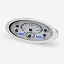
1932 Ford Car VHX InstrumentsVHX-32F$995.00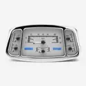
1933-34 Ford Car VHX InstrumentsVHX-33F$995.00 1935 -36 Ford Car VHX InstrumentsVHX-35F$995.00
1935 -36 Ford Car VHX InstrumentsVHX-35F$995.00 1937-38 Chevy Car VHX InstrumentsVHX-37C$995.00
1937-38 Chevy Car VHX InstrumentsVHX-37C$995.00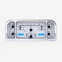
1937-38 Ford Car VHX InstrumentsVHX-37F$995.00 1939 Chevy Car VHX InstrumentsVHX-39C$995.00
1939 Chevy Car VHX InstrumentsVHX-39C$995.00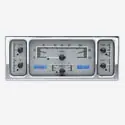
1939 Ford Car VHX InstrumentsVHX-35F$995.00 1940 Chevy Car VHX InstrumentsVHX-40C$995.00
1940 Chevy Car VHX InstrumentsVHX-40C$995.00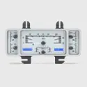
1940 Ford Car VHX InstrumentsVHX-40F$995.00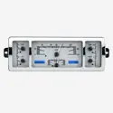
1940-46 Chevy Pickup VHX InstrumentsVHX-40C-PU$995.00 1940-47 Ford Pickup VHX InstrumentsVHX-40F$995.00
1940-47 Ford Pickup VHX InstrumentsVHX-40F$995.00 1941-48 Chevy Car VHX InstrumentsVHX-41C$995.00
1941-48 Chevy Car VHX InstrumentsVHX-41C$995.00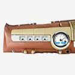
1942-48 Ford/ Mercury Car VHX InstrumentsVHX-42F$995.00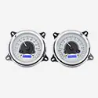
1947-53 Chevy/ GMC Pickup VHX InstrumentsVHX-47C-PU$995.00 1948-50 Ford Truck VHX InstrumentsVHX-48F-PU$995.00
1948-50 Ford Truck VHX InstrumentsVHX-48F-PU$995.00 1949-50 Chevy Car VHX InstrumentsVHX-49C$995.00
1949-50 Chevy Car VHX InstrumentsVHX-49C$995.00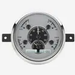
1949-50 Ford Car VHX InstrumentsVHX-49F$995.00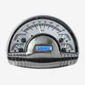
1949-50 Oldsmobile VHX InstrumentsVHX-49o$995.00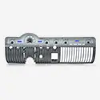
1950-51 Mercury VHX InstrumentsVHX-50M$1,075.00- 1951 Ford Car VHX InstrumentsVHX-51F$995.00
 1951-52 Chevy Car VHX InstrumentsVHX-51C$995.00
1951-52 Chevy Car VHX InstrumentsVHX-51C$995.00 1951-52 Ford Pickup VHX InstrumentsVHX-51F-PU$995.00
1951-52 Ford Pickup VHX InstrumentsVHX-51F-PU$995.00 1953-54 Chevy Car VHX InstrumentsVHX-53C$995.00
1953-54 Chevy Car VHX InstrumentsVHX-53C$995.00 1953-55 Ford Pickup VHX InstrumentsVHX-53F-PU$995.00
1953-55 Ford Pickup VHX InstrumentsVHX-53F-PU$995.00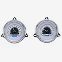
1954 Chevy Pickup VHX InstrumentsVHX-54C-PU$995.00 1955-56 Chevy Car VHX InstrumentsVHX-55C$995.00
1955-56 Chevy Car VHX InstrumentsVHX-55C$995.00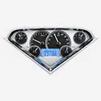
1955-59 Chevy Pickup VHX InstrumentsVHX-55C-PU$995.00 1955-86 Jeep CJ VHX InstrumentsVHX-55J$995.00
1955-86 Jeep CJ VHX InstrumentsVHX-55J$995.00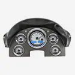
1956 Ford Car VHX InstrumentsVHX-56F$995.00 1956 Ford Pickup VHX InstrumentsVHX-56F-PU$995.00
1956 Ford Pickup VHX InstrumentsVHX-56F-PU$995.00 1957 Chevy Car VHX InstrumentsVHX-57C$995.00
1957 Chevy Car VHX InstrumentsVHX-57C$995.00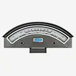
1957 Ford Car VHX InstrumentsVHX-57F$995.00 1957-60 Ford Pickup & 1961-67 Econoline Van VHX InstrumentsVHX-57F-PU$995.00
1957-60 Ford Pickup & 1961-67 Econoline Van VHX InstrumentsVHX-57F-PU$995.00 1958 Chevy Impala VHX InstrumentsVHX-58C-IMP$995.00
1958 Chevy Impala VHX InstrumentsVHX-58C-IMP$995.00 1958-62 Chevy Corvette VHX InstrumentsVHX-58C-VET$1,815.00
1958-62 Chevy Corvette VHX InstrumentsVHX-58C-VET$1,815.00 1959-60 Chevy Impala/ El Camino VHX InstrumentsVHX-59C-IMP$995.00
1959-60 Chevy Impala/ El Camino VHX InstrumentsVHX-59C-IMP$995.00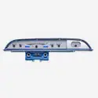
1960 Ford Galaxie VHX InstrumentsVHX-60F-GAL$995.00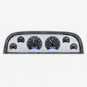
1960-63 Chevy Pickup VHX InstrumentsVHX-60C-PU$995.00 1960-63 Ford Falcon and Ranchero VHX InstrumentsVHX-60F-FAL$995.00
1960-63 Ford Falcon and Ranchero VHX InstrumentsVHX-60F-FAL$995.00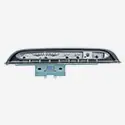
1961 Ford Galaxie, 1961 Mercury Monterey and Meteor 600 VHX InstrumentsVHX-61F-GAL$995.00 1961-62 Chevy Impala VHX InstrumentsVHX-61C-IMP$995.00
1961-62 Chevy Impala VHX InstrumentsVHX-61C-IMP$995.00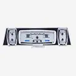
1961-63 Lincoln ContinentalVHX-61L$995.00 1961-66 Ford Pickup VHX InstrumentsVHX-61F-PU$995.00
1961-66 Ford Pickup VHX InstrumentsVHX-61F-PU$995.00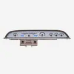
1962 Ford Galaxie VHX InstrumentsVHX-62F-GAL$995.00 1962-63 Ford Fairlane VHX InstrumentsVHX-62F-FAR$995.00
1962-63 Ford Fairlane VHX InstrumentsVHX-62F-FAR$995.00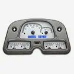
1962-84 Toyota FJ40 VHX InstrumentsVHX-62T-FJ$995.00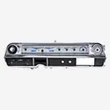
1963-64 Cadillac VHX InstrumentsVHX-63C-CAD$1,195.00 1963-64 Chevy Impala VHX InstrumentsVHX-63C-IMP$995.00
1963-64 Chevy Impala VHX InstrumentsVHX-63C-IMP$995.00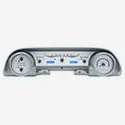
1963-64 Ford Galaxie VHX InstrumentsVHX-63F-GAL$1,025.00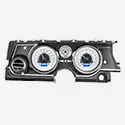
1963-65 Buick Riviera VHX InstrumentsVHX-63B-RIV$995.00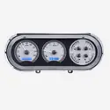
1963-65 Chevy Nova VHX Analog InstrumentsVHX-63C-NOV$995.00 1963-67 Chevy Corvette VHX InstrumentsVHX-63C-VET$1,625.00
1963-67 Chevy Corvette VHX InstrumentsVHX-63C-VET$1,625.00 1963-72 Jeep Wagoneer/ J Trucks, 67-72 Jeepster Commando VHX InstrumentsVHX-63J-WAG$995.00
1963-72 Jeep Wagoneer/ J Trucks, 67-72 Jeepster Commando VHX InstrumentsVHX-63J-WAG$995.00 1964-65 Chevy Chevelle/ Malibu/ El Camino VHX InstrumentsVHX-64C-CVL$995.00
1964-65 Chevy Chevelle/ Malibu/ El Camino VHX InstrumentsVHX-64C-CVL$995.00 1964-65 Ford Falcon, Ranchero and Mustang VHX InstrumentsVHX-64F-FAL$995.00
1964-65 Ford Falcon, Ranchero and Mustang VHX InstrumentsVHX-64F-FAL$995.00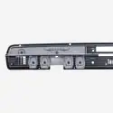
1964-65 Lincoln ContinentalVHX-64L$995.00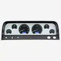
1964-66 Chevy Pickup VHX InstrumentsVHX-64C-PU$995.00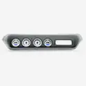
1964-67 Pontiac GTO/ LeMans/ Tempest VHX InstrumentsVHX-64P-GTO$995.00 1965 Chevy Caprice/ Impala VHX InstrumentsVHX-65C-IMP$995.00
1965 Chevy Caprice/ Impala VHX InstrumentsVHX-65C-IMP$995.00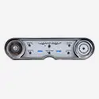
1965-66 Cadillac VHX InstrumentsVHX-65C-CAD$1,195.00 1965-66 Ford Custom Cab Pickup VHX InstrumentsVHX-65F-PU$995.00
1965-66 Ford Custom Cab Pickup VHX InstrumentsVHX-65F-PU$995.00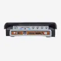
1965-66 Ford Galaxie VHX InstrumentsVHX-65F-GAL$995.00 1965-66 Ford Mustang VHX InstrumentsVHX-65F-MUS$995.00
1965-66 Ford Mustang VHX InstrumentsVHX-65F-MUS$995.00 1966 Chevy Caprice/ Impala VHX InstrumentsVHX-66C-IMP$995.00
1966 Chevy Caprice/ Impala VHX InstrumentsVHX-66C-IMP$995.00 1966-67 Chevy Chevelle/El Camino VHX InstrumentsVHX-66C-CVL$995.00
1966-67 Chevy Chevelle/El Camino VHX InstrumentsVHX-66C-CVL$995.00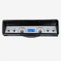
1966-67 Chevy Nova VHX Analog InstrumentsVHX-66C-NOV$995.00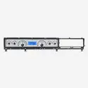
1966-67 Ford Fairlane VHX InstrumentsVHX-66F-FAR$995.00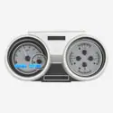
1966-67 Oldsmobile Cutlass VHX InstrumentsVHX-66o-CUT$995.00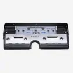
1966-69 Lincoln ContinentalVHX-66L$995.00 1966-77 Ford Bronco VHX InstrumentsVHX-66F-BRO$995.00
1966-77 Ford Bronco VHX InstrumentsVHX-66F-BRO$995.00 1967 Camaro with Console gauges VHX InstrumentsVHX-67C-CAC$1,075.00
1967 Camaro with Console gauges VHX InstrumentsVHX-67C-CAC$1,075.00 1967 Chevy Caprice/ Impala VHX InstrumentsVHX-67C-IMP$995.00
1967 Chevy Caprice/ Impala VHX InstrumentsVHX-67C-IMP$995.00 1967-68 Camaro/ Firebird VHX InstrumentsVHX-67C-CAM$995.00
1967-68 Camaro/ Firebird VHX InstrumentsVHX-67C-CAM$995.00 1967-68 Ford Mustang VHX InstrumentsVHX-67F-MUS$995.00
1967-68 Ford Mustang VHX InstrumentsVHX-67F-MUS$995.00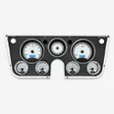
1967-72 Chevy/ GMC Pickup VHX InstrumentsVHX-67C-PU, VHX-67C-PA$1,075.00 1967-72 Ford Pickup VHX InstrumentsVHX-67F-PU$995.00
1967-72 Ford Pickup VHX InstrumentsVHX-67F-PU$995.00 1968 Camaro with Console gauges VHX InstrumentsVHX-68C-CAC$1,075.00
1968 Camaro with Console gauges VHX InstrumentsVHX-68C-CAC$1,075.00 1968 Chevy Caprice/ Impala VHX InstrumentsVHX-68C-IMP$995.00
1968 Chevy Caprice/ Impala VHX InstrumentsVHX-68C-IMP$995.00 1968 Chevy Chevelle/ El Camino VHX InstrumentsVHX-68C-CVL$995.00
1968 Chevy Chevelle/ El Camino VHX InstrumentsVHX-68C-CVL$995.00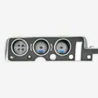
1968 Pontiac GTO/ Lemans/ Tempest VHX InstrumentsVHX-68P-GTO$995.00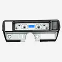
1968-69 Buick Skylark VHX InstrumentsVHX-68B-SKY$995.00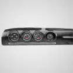
1968-69 Ford Torino, Fairlane and Ranchero VHX InstrumentsVHX-68F-TOR$995.00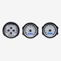
1968-69 Oldsmobile Cutlass, F-85 and 442 VHX InstrumentsVHX-68o-CUT$995.00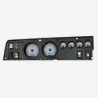
1968-70 Dodge Charger, Super Bee, Coronet R/T, 1970 GTX and Road RunnerVHX-68D-CHG$1,195.00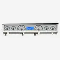
1968-70 Mopar B-Body: Coronet, Belvedere, Satellite and Road RunnerVHX-68D-STD$1,195.00 1968-77 Chevy Corvette VHX InstrumentsVHX-68C-VET, VHX-68C-VTA$1,825.00
1968-77 Chevy Corvette VHX InstrumentsVHX-68C-VET, VHX-68C-VTA$1,825.00 1969 Camaro VHX InstrumentsVHX-69C-CAM$995.00
1969 Camaro VHX InstrumentsVHX-69C-CAM$995.00 1969 Camaro with Console gauges VHX InstrumentsVHX-69C-CAC$1,075.00
1969 Camaro with Console gauges VHX InstrumentsVHX-69C-CAC$1,075.00 1969 Chevy Chevelle/ Malibu/ El Camino VHX InstrumentsVHX-69C-CVL, VHX-69C-CVA$995.00
1969 Chevy Chevelle/ Malibu/ El Camino VHX InstrumentsVHX-69C-CVL, VHX-69C-CVA$995.00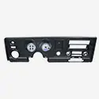
1969 Pontiac Firebird VHX InstrumentsVHX-69P-FIR$995.00- 1969 Pontiac GTO/ Le Mans VHX InstrumentsVHX-69P-GTO$995.00
 1969-70 Chevy Caprice/Impala VHX InstrumentsVHX-69C-IMP$995.00
1969-70 Chevy Caprice/Impala VHX InstrumentsVHX-69C-IMP$995.00 1969-70 Ford Mustang VHX InstrumentsVHX-69F-MUS$995.00
1969-70 Ford Mustang VHX InstrumentsVHX-69F-MUS$995.00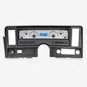
1969-76 Chevy Nova, 73-75 Buick Apollo, 75-76 Skylark, 73-76 Olds Omega, 71-76 Pontiac VenturaVHX-69C-NOV$995.00 1970-71 Ford Torino VHX InstrumentsVHX-70F-TOR$995.00
1970-71 Ford Torino VHX InstrumentsVHX-70F-TOR$995.00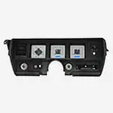
1970-72 Buick Skylark VHX InstrumentsVHX-70B-SKY$995.00 1970-72 Chevy Chevelle SS/Monte Carlo/El Camino & 71 GMC Sprint SP VHX InstrumentsVHX-70C-CVL$1,075.00
1970-72 Chevy Chevelle SS/Monte Carlo/El Camino & 71 GMC Sprint SP VHX InstrumentsVHX-70C-CVL$1,075.00 1970-72 Chevy Malibu/ non SS Chevelle/ El Camino VHX InstrumentsVHX-70C-MAL$995.00
1970-72 Chevy Malibu/ non SS Chevelle/ El Camino VHX InstrumentsVHX-70C-MAL$995.00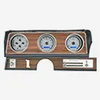
1970-72 Oldsmobile Cutlass 442 VHX InstrumentsVHX-70o-CUT$995.00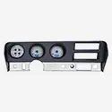
1970-72 Pontiac GTO/ LeMans VHX InstrumentsVHX-70P-GTO$995.00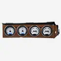
1970-74 Dodge Challenger and 1970-74 Plymouth Cuda with Rallye dashVHX-70D-CLG$1,195.00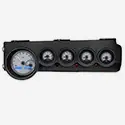
1970-74 Mopar E-Body: Challenger & BarracudaVHX-70D-STD$1,195.00 1970-81 Camaro VHX InstrumentsVHX-70C-CAM$995.00
1970-81 Camaro VHX InstrumentsVHX-70C-CAM$995.00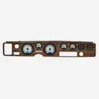
1970-81 Pontiac Firebird VHX InstrumentsVHX-70P-FIR$995.00 1971-73 Ford Mustang VHX InstrumentsVHX-71F-MUS$995.00
1971-73 Ford Mustang VHX InstrumentsVHX-71F-MUS$995.00 1971-73 Ford Mustang with Console VHX InstrumentsVHX-71F-CTR$1,075.00
1971-73 Ford Mustang with Console VHX InstrumentsVHX-71F-CTR$1,075.00 1971-76 Chevy Caprice/ Impala VHX InstrumentsVHX-71C-CAP$995.00
1971-76 Chevy Caprice/ Impala VHX InstrumentsVHX-71C-CAP$995.00 1973-77 Chevy Malibu/ Monte Carlo/ El Camino/ GMC Sprint VHX InstrumentsVHX-73C-CVL, VHX-73C-MAL$995.00
1973-77 Chevy Malibu/ Monte Carlo/ El Camino/ GMC Sprint VHX InstrumentsVHX-73C-CVL, VHX-73C-MAL$995.00 1973-79 Ford Pickup, 78-79 BroncoVHX-73F-PU$995.00
1973-79 Ford Pickup, 78-79 BroncoVHX-73F-PU$995.00 1973-85 Jeep Wagoneer/ Cherokee & J Trucks VHX Instrument SystemVHX-73J-WAG$995.00
1973-85 Jeep Wagoneer/ Cherokee & J Trucks VHX Instrument SystemVHX-73J-WAG$995.00 1973-87 Chevy Pickup, 1973-91 Chevy Blazer, GMC Jimmy and Suburbans VHX InstrumentsVHX-73C-PU$995.00
1973-87 Chevy Pickup, 1973-91 Chevy Blazer, GMC Jimmy and Suburbans VHX InstrumentsVHX-73C-PU$995.00 1977-90 Chevy Caprice/Impala & 1984-86 Pontiac Parisienne VHX InstrumentsVHX-77C-CAP$995.00
1977-90 Chevy Caprice/Impala & 1984-86 Pontiac Parisienne VHX InstrumentsVHX-77C-CAP$995.00 1978-82 Chevy Corvette VHX InstrumentsVHX-78C-VET, VHX 78C-VTA$1,825.00
1978-82 Chevy Corvette VHX InstrumentsVHX-78C-VET, VHX 78C-VTA$1,825.00 1978-88 Chevy Monte Carlo, 1978-87 Chevy El Camino/ Malibu/ Caballero VHX Instrument SystemVHX-78C-MC. VHX-78C-MAL$995.00
1978-88 Chevy Monte Carlo, 1978-87 Chevy El Camino/ Malibu/ Caballero VHX Instrument SystemVHX-78C-MC. VHX-78C-MAL$995.00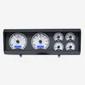
1978-88 Oldsmobile Cutlass VHX InstrumentsVHX-78o-CUT$995.00 1979-86 Ford Mustang VHX InstrumentsVHX-79F-MUS$995.00
1979-86 Ford Mustang VHX InstrumentsVHX-79F-MUS$995.00 1980-86 Ford Pickup and Bronco VHX Analog InstrumentsVHX-80F-PU$995.00
1980-86 Ford Pickup and Bronco VHX Analog InstrumentsVHX-80F-PU$995.00 1981-93 Dodge Full-size Truck and Ramchargers VHX InstrumentsVHX-81D-PU$995.00
1981-93 Dodge Full-size Truck and Ramchargers VHX InstrumentsVHX-81D-PU$995.00 1982-85 Chevy/ GMC S-10, S-15 Pickups and Blazers VHX InstrumentsVHX-82C-S10$995.00
1982-85 Chevy/ GMC S-10, S-15 Pickups and Blazers VHX InstrumentsVHX-82C-S10$995.00 1982-89 Chevy Camaro VHX InstrumentsVHX-82C-CAM$995.00
1982-89 Chevy Camaro VHX InstrumentsVHX-82C-CAM$995.00- 1984-87 Buick Regal and Grand National VHX InstrumentsVHX-84B-REG$995.00
 1986-91 Jeep Wagoneer & 1986-88 J Trucks VHX Instrument SystemVHX-86J-WAG$995.00
1986-91 Jeep Wagoneer & 1986-88 J Trucks VHX Instrument SystemVHX-86J-WAG$995.00 1986-93 Chevy/ GMC S-10/ S-15 Pickups and 1986-94 S-10/ S-15 Blazers/ Jimmy VHX InstrumentsVHX-86C-S10$995.00
1986-93 Chevy/ GMC S-10/ S-15 Pickups and 1986-94 S-10/ S-15 Blazers/ Jimmy VHX InstrumentsVHX-86C-S10$995.00 1987-89 Ford Mustang VHX InstrumentsVHX-87F-MUS$995.00
1987-89 Ford Mustang VHX InstrumentsVHX-87F-MUS$995.00 1987-91 Ford Pickup and Bronco VHX Analog InstrumentsVHX-87F-PU$995.00
1987-91 Ford Pickup and Bronco VHX Analog InstrumentsVHX-87F-PU$995.00 1988-1994 Chevy/ GMC Pickup/ SUV VHX InstrumentsVHX-88C-PU$995.00
1988-1994 Chevy/ GMC Pickup/ SUV VHX InstrumentsVHX-88C-PU$995.00 1990-92 Chevy Camaro VHX InstrumentsVHX-90C-CAM$995.00
1990-92 Chevy Camaro VHX InstrumentsVHX-90C-CAM$995.00 1990-93 Ford Mustang VHX InstrumentsVHX-90F-MUS$995.00
1990-93 Ford Mustang VHX InstrumentsVHX-90F-MUS$995.00 1994-2004 Ford Mustang VHX InstrumentsVHX-94F-MUS$995.00
1994-2004 Ford Mustang VHX InstrumentsVHX-94F-MUS$995.00 1994-96 Chevy Caprice/ Impala SS VHX InstrumentsVHX-94C-CAP$995.00
1994-96 Chevy Caprice/ Impala SS VHX InstrumentsVHX-94C-CAP$995.00 1995-98 Full-size, 1995-00 SUV & HD Pickup Chevy/ GMC VHX InstrumentsVHX-95C-PU$995.00
1995-98 Full-size, 1995-00 SUV & HD Pickup Chevy/ GMC VHX InstrumentsVHX-95C-PU$995.00 VHX-1013: Universal Triple Round, Analog VHX InstrumentVHX-1013$995.00
VHX-1013: Universal Triple Round, Analog VHX InstrumentVHX-1013$995.00 VHX-1014: Universal Dual 5.4" Round, Analog VHX InstrumentVHX-1014$995.00
VHX-1014: Universal Dual 5.4" Round, Analog VHX InstrumentVHX-1014$995.00 VHX-1015: Universal Five Gauge Round, Analog VHX InstrumentVHX-1015$995.00
VHX-1015: Universal Five Gauge Round, Analog VHX InstrumentVHX-1015$995.00- VHX-1016: Universal 5" x 10" Multi-level Elliptical, Analog VHX InstrumentVHX-1016$995.00
- VHX-1017: Universal 5.7" X 12.05" Elliptical, Analog VHX InstrumentVHX-1017$995.00
- VHX-1018: Universal 4.4" x 11.4" Rounded Rectangle, Analog VHX InstrumentVHX-1018$995.00
 VHX-1019: Universal Single 7" Round, Analog VHX InstrumentVHX-1019$995.00
VHX-1019: Universal Single 7" Round, Analog VHX InstrumentVHX-1019$995.00 VHX-1020: Universal 5.4" Round Trio, Analog VHX InstrumentVHX-1020$995.00
VHX-1020: Universal 5.4" Round Trio, Analog VHX InstrumentVHX-1020$995.00 VHX-1022: Universal Five Gauge Round, Analog VHX InstrumentVHX-1022$995.00
VHX-1022: Universal Five Gauge Round, Analog VHX InstrumentVHX-1022$995.00- VHX-1023: Universal 3.75" x 19.5" Rectangle, Analog VHX InstrumentVHX-1023$995.00
 VHX-1024: Universal Six Gauge Round, Analog VHX InstrumentVHX-1024$995.00
VHX-1024: Universal Six Gauge Round, Analog VHX InstrumentVHX-1024$995.00 VHX-1050/1060: Universal 5 and 6 Gauge Round, Analog VHX InstrumentsVHX-1050, VHX-1060$865.00
VHX-1050/1060: Universal 5 and 6 Gauge Round, Analog VHX InstrumentsVHX-1050, VHX-1060$865.00- VHX-1100: Universal 6" x 10.75" Competition, Analog VHX InstrumentVHX-1100$1,250.00
- VHX-1200: 1967-69 Marquez Designs CamaroVHX-1200$1,400.00
Not sure what fits?
Talk to a tech in Sioux Falls, Monday to Friday, 8am to 5pm Central.